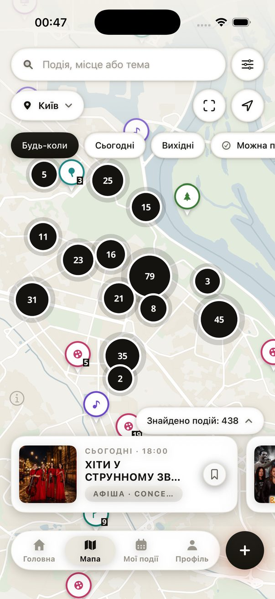
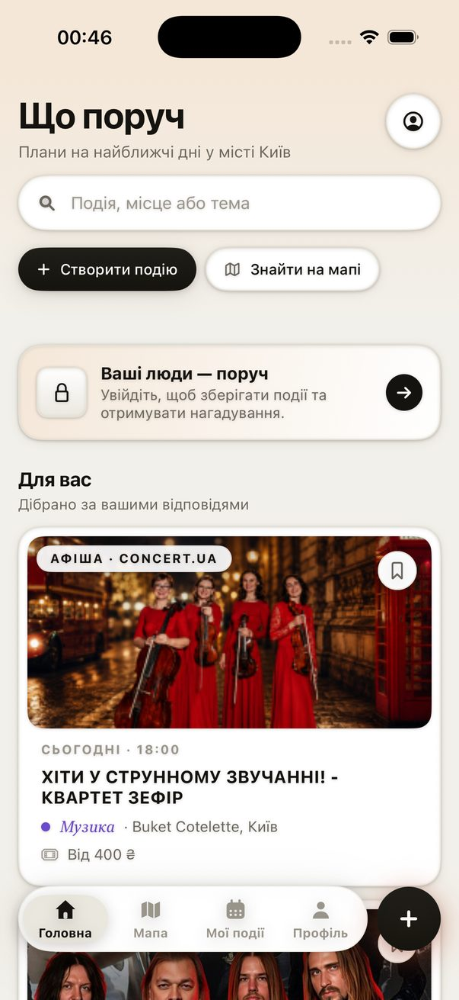
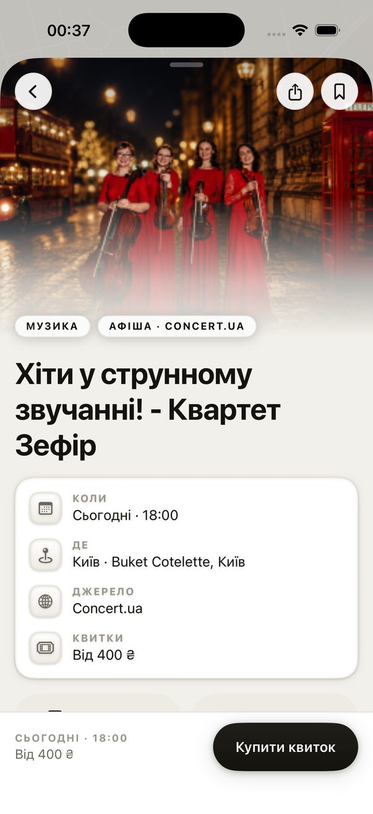
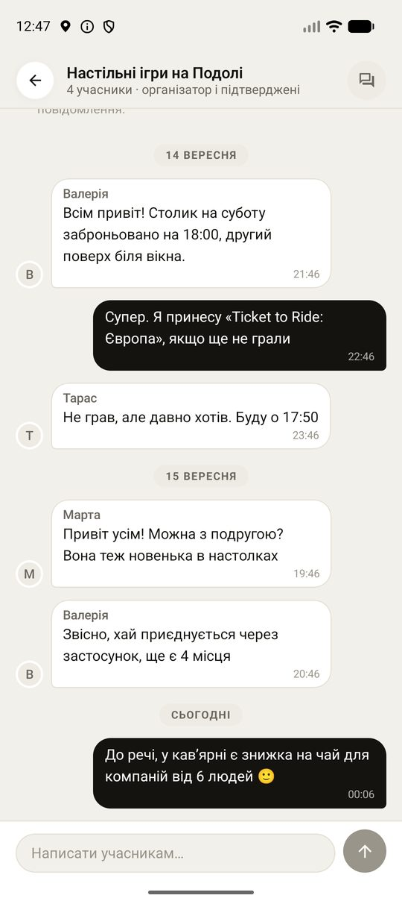

Що вміє
- Мапа замість стрічки. Сотні подій міста з кластерами за категоріями. Фільтри «сьогодні», «вихідні», «є вільні місця».
- Афіша й спільнота разом. Концерти та вистави з квиткових сервісів поруч із зустрічами, які створюють люди.
- Свої зустрічі за три кроки. Опис, точка на мапі, час і місткість. Черга очікування, підтвердження учасників, вікові межі.
- Чат учасників. Організатор і підтверджені учасники спілкуються всередині події.
- Плани й нагадування. «Мої події», збережене, нагадування за годину до початку, експорт у календар і маршрут у системних мапах.
- Рекомендації без стеження. Відповіді про інтереси зберігаються на пристрої й лише сортують події.
Безпека
«Поряд» для дорослих: реєстрація з 18 років. У кожній події є скарга й блокування, а імена учасників бачать лише організатор і ті, хто вже приєднався. Детальніше в політиці конфіденційності та умовах.
Підтримка
Питання, скарги, запити правовласників: hello@poriad.app. Відповідаємо протягом 24 годин.